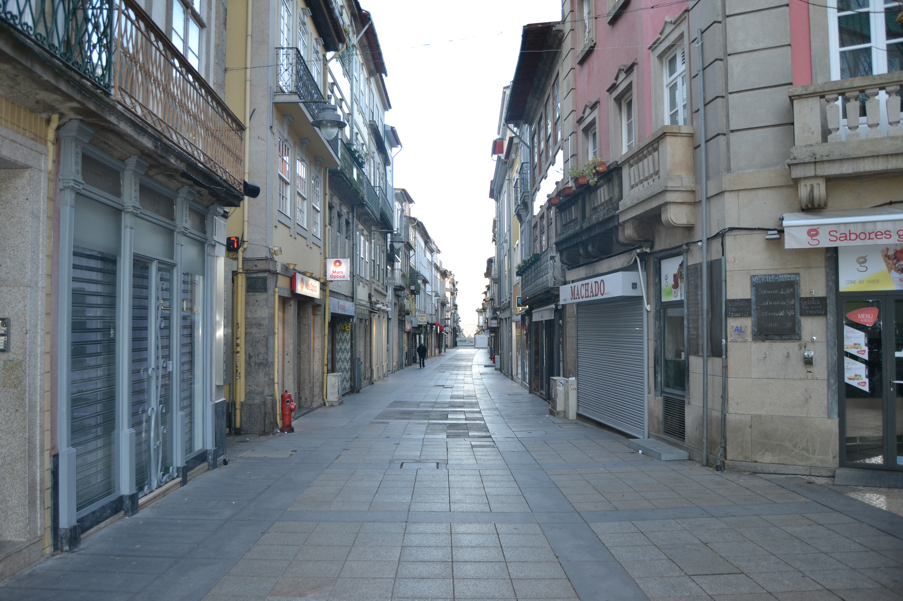
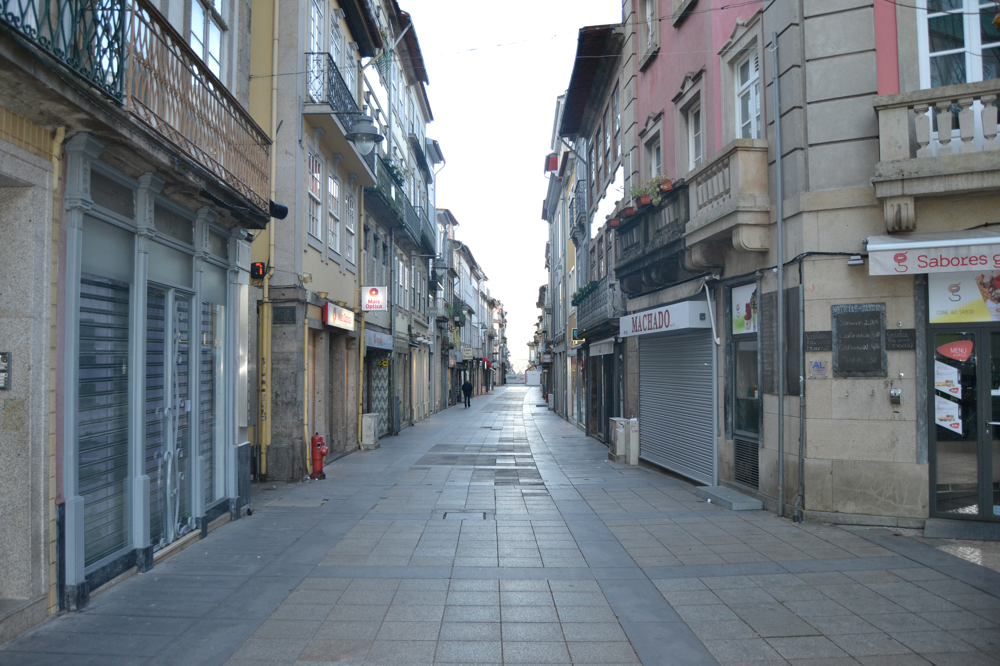

Rua do Souto Porta do Souto
Informações sobre a rua:
Rua chave de todo o urbanismo e vida económica bracarense, a rua do Souto, terá sido, pelo menos desde o séc. XVII, a mais importante da cidade.
Quando se construiram as muralhas de Braga pensou-se logo no possível crescimento citadino. A metade Sul,
já habitada e arruada com artérias cujo traçado remonta aos romanos, ficou protegida; a metade Norte continuou vazia, com campos, que lentamente se foram enchendo.
Primeiro foi a rua Nova, mais tarde chamada do Campo; depois, em 1565, a dos Gatos ou da Misericórdia.
A rua que delimitou as duas zonas foi a do Souto. Era longa, bem lançada e recta, unia o Paço dos Arcebispos com o Castelo e uma porta da muralha, no seu extremo.
Não importa agora que tipo de casas teria naquela longínqua data. O Mappa mostra-nos que em 1750 era uma artéria muito bem organizada,
tendo quase todas as casas com três pisos, gelosias, muitas varandas de madeira cobertas também com gelosias e, no piso térreo,
grandes portas de madeira, permitindo o comércio. É verdadeiramente magnífico de beleza e de unidade este conjunto!
Pena foi que, nas décadas de 60 ou 70 do séc. XIX, todas as gelosias tivessem sido destruídas.
No desenho das fachadas sobressaem apenas o conjunto monumental do largo do Paço, obra já dos Arcebispos que vão de D. Diogo de Sousa a D. Rodrigo de Moura Teles,
e as casas a seguir aos prazos n.° 2, com um belo trabalho de pedra nas janelas e n. ° 50, com os pisos superiores assentes sobre duas finas colunas.
Hoje a estrutura das suas casas mantém-se, excepto no que respeita às gelosias. Em 1923 e 1954 a rua do Souto foi cortada pelas rua Justino Cruz
(que a ligou ao Campo da Vinha) e pela rua Francisco Sanches (no enfiamento da anterior, estabelecendo ligação para carros com o largo de S. João do Souto,
uma vez que a passagem de pessoas já era feita através da Casa do Passadiço).
A zona denominada Porta do Souto, que corresponde à parte do Largo Barão de S. Martinho entre a rua dos Janes e a Foto Pelicano,
foi totalmente alterada em 1853, quando foi destruído o arco da Porta do Souto.
Das 37 casas do lado Norte e 55 do lado Sul eram prazos do Cabido 16 e 33 respectivamente.
Metade desta casa é pertença do cabido de Lamego. Confronta, do poente, com os Paços Arcebispais (onde se situavam, em 1550 as casas novas da Relação e, no séc. XVIII, o Aljube); do sul com a parte pertencente ao cabido de Lamego, e, do norte com a Relação Eclesiástica.Confronta, de poente, com casa foreira à Mitra e, do nascente, com casa do morgado dos Leites. Confronta, do nascente, com casa foreira à Igreja de S. Pedro d'Este e, do poente, com casa foreira ao Morgado dos Leites. Este prazo foi comprado pelo Cabido, em 1485, ao Rei D. João II.
Confronta, do poente, com casa foreira à Igreja de S. Pedro d'Este.
A enfiteuta era filha de Francisco João, mercador, e de sua 1ª mulher,Vicência Rebelo , a quem sucedeu neste Prazo. Confronta, do nascente, com casa dízima a Deus e, do poente, com casa foreira à confraria de Santiago da Cividade. Confronta, do poente, com casa dízima a Deus. Tem uma serventia para a Loura desde o ano de 1534. O quintal desta casa é foreiro à confraria de S. João do Souto. Confronta, do nascente, com casa foreira à capela dos Cerveiras. O enfiteuta possuia este prazo por sucessão de João Soares Braga, juiz das sizas, e de sua mulher, Jerónima Vaz. Confronta, do nascente. com a casa foreira à confraria de S. João do Souto e, do poente, com casa dízima a Deus. Confronta, do poente, com casa foreira à confraria de S. João do Souto. Confronta, do poente, com casa foreira à capela de Sta. Bárbara.O emprazamento foi feito no ano de 1706. Foi construída em 1591, em pertenças da casa nº 15. Fica situada no canto da Rua do Souto e Terreiro do Castelo. Confronta, do nascente, com o dito Terreiro, do Sul, com a rua e, do poente, com o nº 15.
Situa-se à porta do Souto, defronte do Terreiro do Castelo e confronta, do nascente, com casa foreira à Igreja de Fraião e, do poente, com casa foreira à confraria de S. João do Souto.
É foreira à obra da Sé desde o ano de 1484. por escambo feito com o cabido, ao qual ficou a pertencer o nº 46, que confronta, do nascente, com casa foreira à Câmara. Paga, de pensão ou foro, 480 reis.Confronta, do sul, com a casa da Rua de Janes, foreira à confraria de S. João do Souto. Confronta, do nascente, com casa foreira ao Convento do Carmo ou aos Padres Coreiros: do poente, com casa da comenda de Adaúfe, dos Padres Coreiros; e, do sul, com casa da Rua de Janes, foreira a S. João do Souto.O emprazamento foi feito no ano de 1724. Confronta, do nascente, com casa foreira ao Mosteiro de Adaúfe; do poente, com casa de S. Pedro d'Este; e, do sul, com casa foreira a S. João do Souto. Foi incorporada neste prazo a casa nº 11 da Rua de Janes.
À casa nº 23 pertence, ainda, o nº 10 da Rua de Janes.João Carneiro paga de censo, respectivamente, 75 e 72 reisÀ casa nº 23 pertence, ainda, o nº 10 da Rua de Janes.João Carneiro paga de censo, respectivamente, 75 e 72 reis Alexandre Brandão paga de censo, 13 reis e 5 pretos, ou seja, meio maravedi. Foi construída, no ano de 1538, em pertenças do nº 26. O prazo é constituído por casa e rossio, tendo este serventia pelo nº 8 da Rua de Janes. Foi construída no ano de 1513, em pertenças do nº 29. No ano de 1596. foi-lhe incorporada a casa n° 26. A este prazo pertence a casa nº 7, da Rua de Janes. Foi construída em 1524, em pertenças do nº 31, e acrescentada, no ano de 1609, uma parte do quintal do nº 33 e uma casa pequena do nº 31. Confronta, do poente, com casa foreira à Igreja de S. Pedro d'Este. Paga, também 7 reis ao porteiro da massa. O censo é pago por Ascenso Antunes.O censo é pago pelo livreiro, Manuel Ferreira. O censo é pago por Ascenso Antunes. O emprazamento foi feito em 1727. Corresponde ao Passadiço do nº 5, da Rua de S. João, para onde tem a frontaria e serventia principais. Encontram-se unidas num só prazo, desde o ano de 1637. Também já se encontraram unidas entre os anos de 1491 e 1551. O nº 43 esteve unido ao nº 44, entre os anos de 1482 e 1532. Enquanto estiveram separados, a serventia do nº 44 fazia-se por uma porta e corredor situados por baixo do nº 43.O nº 43 esteve unido ao nº 44, entre os anos de 1482 e 1532. Enquanto estiveram separados, a serventia do nº 44 fazia-se por uma porta e corredor situados por baixo do nº 43. A enfiteuta era filha de Gregório Ferreira e de sua mulher, Antónia Maria, e herdou este prazo que seu pai comprara. Confronta, do sul, com pertenças do nº 48; e do poente com a parte do nº 47, foreira à confraria de S. João do Souto. Possui duas portas para a rua: uma que serve para a loja, em que estão as drogas de botica e outras mercearias e outra que é a serventia desta casa. Metade desta casa (parte nascente) é foreira à confraria de S. João do Souto, e confronta com o nº 48. A parte poente da casa confronta com casa dízima a Deus. Desde o ano de 1566, que está unida a uma casa que se desmembrou do nº 46. Confronta, do nascente, com casa dízima a Deus.Confronta, do nascente, com casa foreira à cororaria. Do nascente e poente confronta com casas dízimas a Deus. Até ao ano de 1679 o cabido possuía apenas as traseiras desta casa. A parte da frente era dízima a Deus. Posteriormente, Domingos Pinheiro Leite doou ao cabido a parte que lhe cabia "se alcançasse sentença a seu favor no pleito que trazia sobre a dita parte com Mariana Vieira, viúva".
Casas:
- Número: 1
Enfiteuta: Agostinha Maia, viúva de Domingos Antunes da Rocha, ourives
Foro: 250 reis e 2 galinhas
Descrição:
- Número: 2
Enfiteuta: Luís Fernandes Braga
Foro: 320 reis e 2 galinhas
Descrição: None - Número: 3
Enfiteuta: Rev. Cónego João Pinheiro Leite
Foro: 620 reis e 2 galinhas
Descrição: None - Número: 4
Enfiteuta: Maria Ferreira, viúva de Custódio Barroso
Foro: 200 reis e 1 galinha
Descrição: None - Número: 5
Enfiteuta: Os herdeiros de André Loureiro
Foro: 600 reis e 3 galinhas
Descrição: None - Número: 6
Enfiteuta: Luísa Maria
Foro: 500 reis e 2 galinhas
Descrição: None - Número: 7
Enfiteuta: Carlos Veloso
Foro: 300 reis e 2 galinhas
Descrição: None - Número: 8
Enfiteuta: António Rebelo de Matos, abade de Tadim
Foro: 520 reis e 2 capões
Descrição: None - Número: 9
Enfiteuta: Isabel Maria da Silva, viúva do Dr. Santos de Araújo
Foro: 600 reis e 4 galinhas
Descrição: None - Número: 10
Enfiteuta: Dr. Domingos Soares
Foro: 800 reis e 2 galinhas
Descrição: None - Número: 11
Enfiteuta: Padre João da Silva
Foro: 600 reis e 2 galinhas
Descrição: None - Número: 12
Enfiteuta: Os herdeiros de Jerónimo Peixoto
Foro: 460 reis e 2 galinhas
Descrição: None - Número: 13
Enfiteuta: Madre Maria Clara, religiosa do Salvador
Foro: 650 reis e 5 galinhas
Descrição: None - Número: 14
Enfiteuta: Dr. António Pinheiro
Foro: 480 reis e 2 galinhas
Descrição: None - Número: 15
Enfiteuta: Manuel de Araújo, abade de Sta. Eufémia
Foro: 120 reis e 1 galinha
Descrição: None - Número: 16
Enfiteuta: Leonel da Mota
Foro: 120 reis e 1 galinha
Descrição: None - Número: 17
Enfiteuta: Ursula Josefa
Foro: 650 reis e 2 galinhas
Descrição: None - Número: 18
Enfiteuta:
Foro: None
Descrição: None - Número: 19
Enfiteuta: Jerónima Rodrigues, viúva de Frutuoso Marques
Foro: 600 reis e 2 galinhas
Descrição: None - Número: 20
Enfiteuta: Porcina Maria, viúva
Foro: 520 reis e 2 galinhas
Descrição: None - Número: 21
Enfiteuta: Luís Vaz Vieira e sua mulher, Antónia Maria Ferreira
Foro: 460 reis e 4 galinhas
Descrição: None - Número: 22
Enfiteuta: None
Foro: 75 reis (de censo)
Descrição: None - Número: 23
Enfiteuta:
Foro: 72 reis (de censo)
Descrição: None - Número: 24
Enfiteuta:
Foro: 13 reis e 5 pretos
Descrição: None - Número: 25
Enfiteuta: Manuel Moreira, cerigueiro
Foro: 430 e 2 galinhas
Descrição: None - Número: 26
Enfiteuta: Mariana da Costa, viúva de Pedro Mendes
Foro: 200 reis e 2 galinhas
Descrição: None - Número: 27
Enfiteuta: Dr. João de Matos
Foro: 400 reis e 2 galinhas
Descrição: None - Número: 28
Enfiteuta: Padre Baltazar Ferreira da Silva
Foro: 580 reis e 2 galinhas
Descrição: None - Número: 29
Enfiteuta: Domingos Martins Teixeira
Foro: 840 reis e 2 capões
Descrição: None - Número: 30
Enfiteuta: Os herdeiros de André Loureiro
Foro: 270 reis e 1 galinha
Descrição: None - Número: 31
Enfiteuta: Manuel Francisco da Cruz
Foro: 220 reis e 1 galinha
Descrição: None - Número: 32
Enfiteuta: Jácome de Brito Leite
Foro: 250 reis e 2 galinhas
Descrição: None - Número: 33
Enfiteuta: António Pereira Regalo
Foro: 500 reis e 3 galinhas
Descrição: None - Número: 34
Enfiteuta: Padre António da Silva
Foro: 300 reis
Descrição: None - Número: 35
Enfiteuta:
Foro: 13 reis e 2 pretos (de censo)
Descrição: None - Número: 36
Enfiteuta:
Foro: 13 reis e 2 pretos (de censo)
Descrição: None - Número: 37
Enfiteuta:
Foro: 13 reis e 2 pretos (de censo)
Descrição: None - Número: 38
Enfiteuta: Padre António da Rocha Ferreira
Foro: 370 reis e 2 galinhas
Descrição: None - Número: 39
Enfiteuta:
Foro: None
Descrição: None - Número: 40
Enfiteuta: Francisco Gomes, livreiro
Foro: 430 reis e 2 capões
Descrição: None - Número: 41 e 42
Enfiteuta: Padre José António de Lima
Foro: 600 reis e 2 capões
Descrição: None - Número: 43
Enfiteuta: Os herdeiros de Francisco Rodrigues da Costa, mercador
Foro: 300 reis e 2 capões
Descrição: None - Número: 44
Enfiteuta: Os herdeiros de Francisco Rodrigues da Costa, mercador
Foro: 220 reis e 1 galinha
Descrição: None - Número: 45
Enfiteuta: Dr. Manuel Gomes Lages
Foro: 340 reis e 2 galinhas
Descrição: None - Número: 46
Enfiteuta: Bernardina de Sena Maurícia, solteira
Foro: 480 reis
Descrição: None - Número: 47
Enfiteuta: Os herdeiros de João Marques da Veiga
Foro: 150 reis e 2 galinhas
Descrição: None - Número: 48
Enfiteuta: Dr. António Fernandes do Vale, médico
Foro: 600 reis, 2 capões e 2 galinhas
Descrição: None - Número: 49
Enfiteuta: José Loureiro
Foro: 430 reis e 2 galinhas
Descrição: None - Número: 50
Enfiteuta: Manuel Pereira da Costa, livreiro
Foro: 470 reis e 2 capões
Descrição: None - Número: 51
Enfiteuta: Domingos José de Melo
Foro: 265 reis e 2 galinhas
Descrição: None
 
